Platform User Guide
The CAD Pillar | Platform User Guide
How to use the portal in every role: client, designer, pod lead and the admin team. First steps, every screen, and step-by-step tasks.
Welcome
The CAD Pillar portal is where jewelry businesses order CAD designs and renders, and where the team that makes them works. Everyone signs in at the same address. Each person sees only their own part.
How to use this guide
- Find your role's chapter: Clients, Designers, Pod leads, Admins and staff. Each chapter opens with What do you need to do?: click a task to jump to its steps.
- Bold words are the exact labels on screen. "Open Orders → click Review → click Approve this design" means click each in turn.
- Callouts:
- Before you commit marks a step that changes something for someone else, or cannot be undone.
- Known limit marks something the portal does not do yet.
- Screenshots come from a test system filled with made-up orders (titles such as "E2E halo ring"). Your screens show your own work.
- Administrators also have a separate, more detailed Admin Operations Manual.
Account types at a glance
Every person signs in to the same portal at thecadpillar.com/sign-in. What they see depends on their role (the kind of account) and their status (whether the account may act). Navigation is not access control: the database checks every action again, so a person never gains an ability by finding a link.
| Account type (as shown on Access) | Workspace label | Sidebar colour | Lands on after sign-in | Main job |
|---|---|---|---|---|
| Client | Client workspace | White | Home (/) | Orders CAD designs and renders, pays, reviews, approves, downloads |
| Designer | Designer workspace | White | Home (/) | Models the jobs their pod lead assigns, checks them, sends them to QC |
Pod lead (stored as role QC) | Pod lead workspace | Black | QC queue (/) | Assigns jobs within their pod, runs quality control, places orders for clients |
| Ops, Sales, Finance | Admin workspace | Black | Queue (/) | Run the business; each has part of the admin powers |
| Admin = Ops + Sales + Finance together | Admin workspace | Black | Queue (/) | Everything |
What makes someone an "Admin"
The product has no single "Admin" role. A person is a full Admin when their account holds all three staff roles: Sales, Ops and Finance. One of these is their primary role (chosen on the Access screen); the other two are additional roles. The Access screen shows additional roles as small "+ Sales" / "+ Finance" tags beside the role menu.
| A staff member who holds only… | Can | Cannot |
|---|---|---|
| Sales | Set quotes; work Applications and Leads | Mark payments, assign, deliver, close, manage people or settings |
| Ops | Change roles and suspend accounts on Access; assign a designer as an exception; deliver and close orders; send a dispute back for rework; work Applications and Leads | Quote, record payments, refund, manage designers, pods or settings |
| Finance | Mark a transfer received; refund; release escrow; export and mark payouts paid | Quote, assign, deliver, manage people or settings |
| Sales + Ops + Finance (full Admin) | All of the above, plus Designers, Pods, Clients, Settings, Credits, account managers, pay rates, designer documents and bank details | — |
Account status
| Status (Access screen pill) | Meaning | Can sign in | Can act |
|---|---|---|---|
| Active | Normal account | Yes | Yes |
| Pending | Account exists but is not yet active. Designers added by the team start here until they sign the designer agreement. | Yes | Only what their role allows before activation (a designer cannot be assigned work) |
| Suspended | Frozen by an Ops member or Admin. Nothing is deleted. | Yes, but their actions are refused | No |
There is no "delete account". Orders, files, money records and the audit history all refer to the person, so the product suspends instead.
Two ideas used throughout
- Pod. A small team: one pod lead and the designers placed in it. A pod lead sees and assigns only their pod's designers and orders. An order joins a pod when it is paid or confirmed (automatically while only one pod has a lead; otherwise an Admin chooses).
- Anonymity. A client never sees who designed their piece; a designer never sees who the client is or what the client paid. To the client, every team member is "Your team". This is enforced by the database, not by hiding buttons.
The basics, for every role
Signing in
- Go to thecadpillar.com/sign-in.
- Enter the email address your account was opened with.
- Enter the code that arrives by email. No password is needed. If you set a password under Account → Sign-in and security, you can use it instead.
- The portal opens on your role's starting page (see Account types at a glance).
A new client who signs up without being invited is asked once, on Welcome, for their business details. Team members, designers and clients the team created skip that step.
Finding your way around
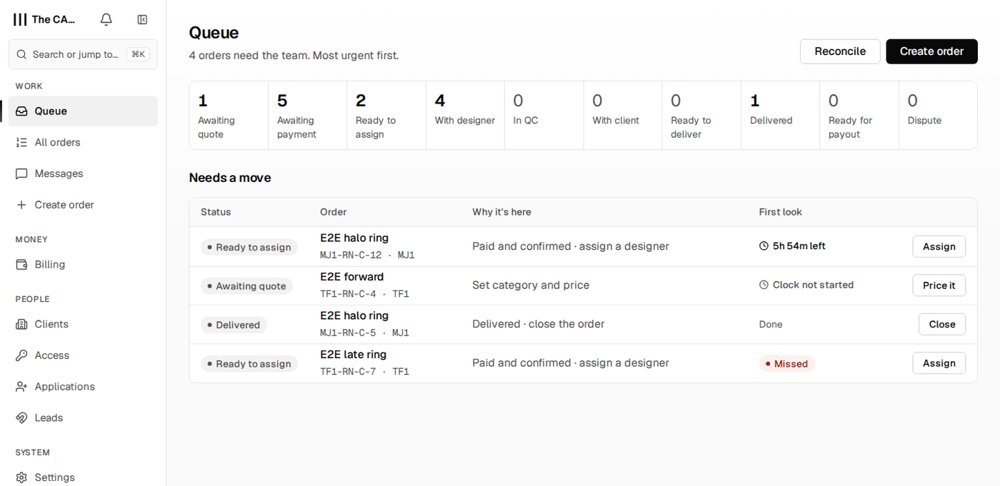
- Sidebar (computer). The workspace name and your destinations, grouped (for example Work, Money, People, System). The square icon beside the bell collapses the sidebar to icons and expands it again.
- Bell. Your notifications, newest first, with an unread count. Open it to read them; Mark all read clears the count. While the portal is open, anything new also pops up briefly with Open.
- Search or jump to… ⌘K. Press Ctrl + K (⌘ + K on a Mac), or click the bar. Type an order reference (for example
MJ1-RN-C-4), a client code or a page name. Esc closes it. - Your name (bottom of the sidebar). Opens a small menu with Account and Sign out.
- Unread counts. The number beside Messages counts unread messages.
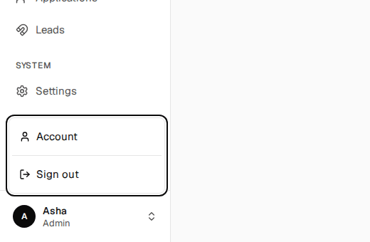
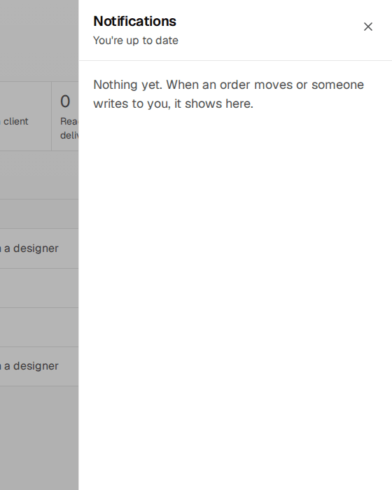
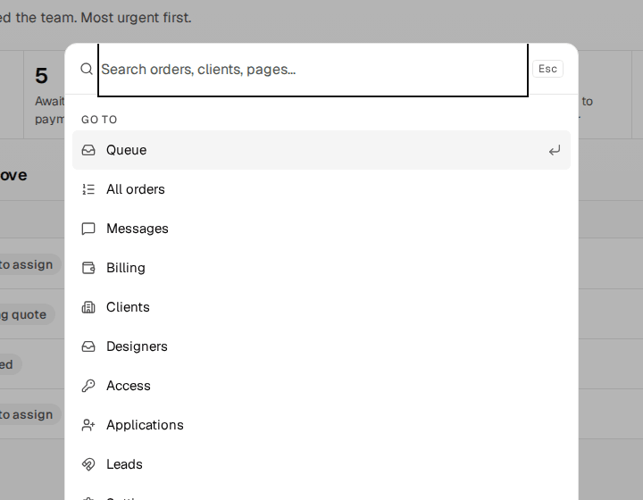
On a phone
The sidebar becomes a bar along the bottom of the screen. It shows your first two destinations, Messages (designers also get Earnings), and More. Roles that create orders also get a raised + button. More opens every other destination, plus Sign out. The top bar shows the page name, the bell and the search button.
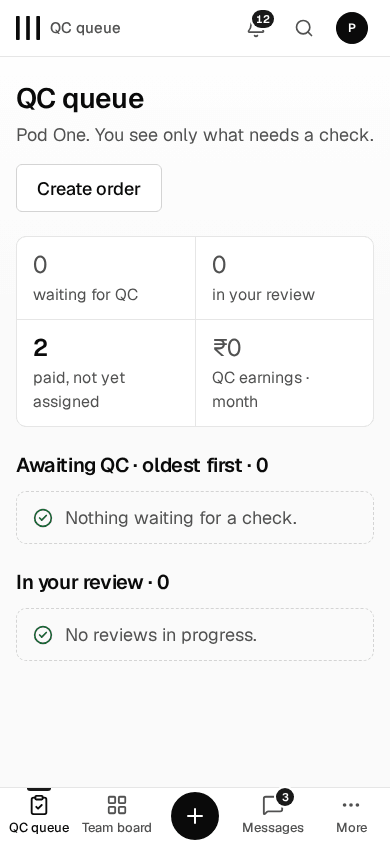
Your account page
Open your name → Account (on a phone: More → Account).
| Section | Who sees it | What it is for |
|---|---|---|
| Your identity, roles | Everyone | Your name and email, and your role(s) |
| Client code | Clients | The code on all your orders (made from your business name) |
| Account reference | Everyone | Quote it when you contact the team or support |
| Your business | Clients | Business name, your name, work email, WhatsApp / phone, how you heard about us |
| Master instructions | Clients | Your factory's standing rules, shown on every order to the designer and pod lead (up to 4,000 characters; leave out company name and contact details) |
| Your logo | Clients | Shown on your 3D preview links (PNG or JPEG, up to 2 MB) |
| Sign-in and security | Everyone | Email, password, two-step sign-in, and the devices you are signed in on |
| Payout details | Designers | The bank account your earnings are paid into |
| Clients | Which optional emails you get (order emails always arrive) | |
| On this device | Everyone | Time zone (times on screen follow it; "This device" follows your computer or phone) and Notifications (push alerts on this device) |
| Sign out | Everyone | Ends the session on this device |
Clients
For jewelry businesses ordering CAD and renders. Everything here happens in your own account; nobody else's orders are visible to you, and the designer never sees your name.
What do you need to do?
- Open your account for the first time
- Order a CAD design or renders
- Start again from a past order
- Pay for an order
- Follow an order
- Review the first look, ask for changes, approve
- Download your files
- Share a 3D preview with your customer
- Message the team
- Report a problem with an order
- Cancel an order or delete a draft
- Open a spec claim after casting
- Set your factory's standing rules (master instructions)
- See credit and payments (Wallet)
- Choose which emails you get
Your first sign-in
- On thecadpillar.com, click Start (or go to thecadpillar.com/sign-up). Enter your work email, then the code that arrives by email.
- If the team already opened an account for you, go to thecadpillar.com/sign-in instead and use the email they used.
- On Welcome, fill in Your business:
- Business name: your client code is made from it.
- Your name.
- Work email.
- WhatsApp / phone, with the country code.
- How did you hear about us? (required).
- Optionally turn on Notifications under Know the moment it's ready: an alert on this device for prices, renders, files, messages and payments.
- Click Start your first order, or Go to home.
Home shows:
- New order;
- Needs your action (or "You're all caught up");
- a draft to Finish your brief;
- your latest Messages and Recent orders;
- Your account: Wallet, Activity, and any Credit for your next order.
The bar along the top (clients only):
- Live support online / offline: a green dot while a person is answering. Live support runs 3 PM to midnight India time; hover to see when it next opens, in your own time. The portal itself is open around the clock.
- The WhatsApp icon opens a chat with the team.
- Talk to your team calls the team by phone.
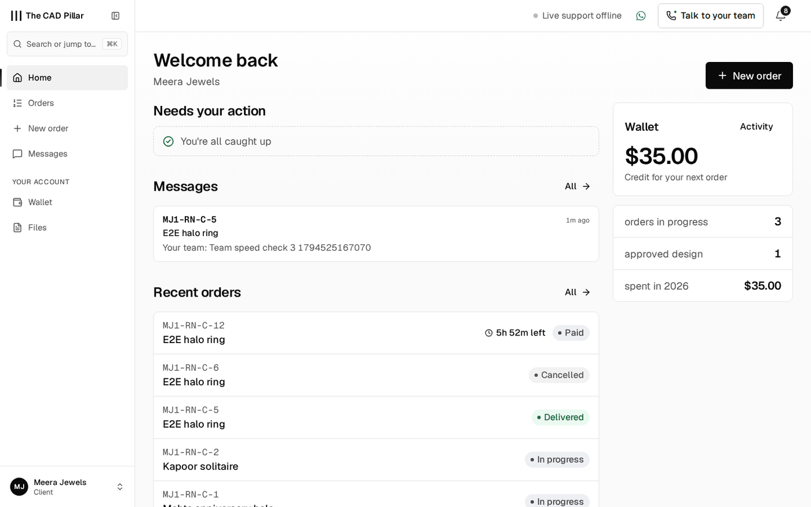
Order a CAD design or renders
- Click New order (on a phone, the raised +).
- Choose CAD design ("3DM and STL, ready to cast") or Renders ("Photo-real images of your piece"). A draft opens, and it saves as you type. "Not saved" means it could not save, with the reason.
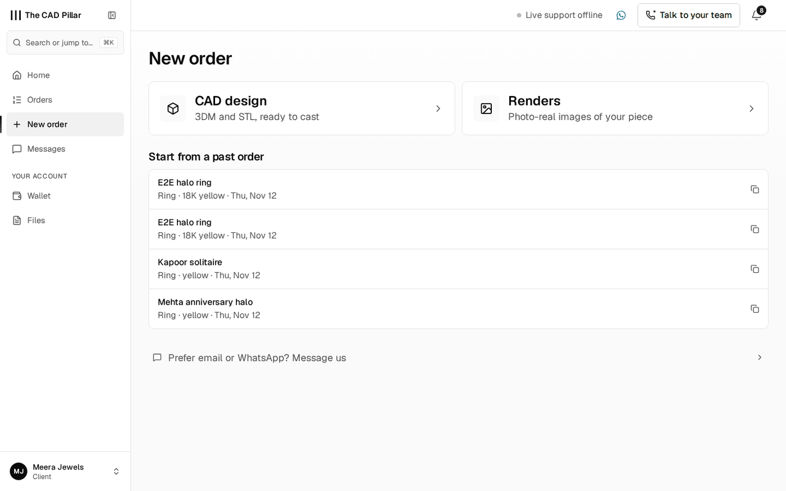
Step 1 · The piece
- Under Photos, click Add photos and add at least one reference photo (JPEG, PNG or WebP, up to 25 MB each).
- Location, camera and owner details are removed before a photo is stored.
- The first photo is the Main one; Make this the main photo changes it.
- Optionally click a photo → Mark what you mean. Tap the picture to drop numbered pins, type what each one points at, then click Save marks.
- Name this job, for example "Halo ring for the spring line". The designer sees this name.
- What are we modelling? Choose ring, pendant, earrings and so on. Other asks What is it?.
- Click Next.
Step 2 · Stones
- Centre stone: choose No centre stone, or the shape.
- With a centre stone, its size (length and width) and Setting are required. "As per reference image" is allowed for shape and setting.
- Certified stone: tick it to add up to 5 pictures or PDFs of the certificate under Diamond certificate (JPG, PNG or PDF, up to 10 MB). Cover any company name on the page.
- Side stones (accents), optional:
- Add side stones adds a row; Another size adds a row for a different size.
- Each row needs a Shape and a Setting, plus a Width mm unless you tick Scale to centre stone.
- Remove this row deletes it.
- Click Next. If something required is missing, "To go on, add:" lists it.
Step 3 · Size & metal (called Metal & notes for pieces without a size)
- For a ring:
- Choose the Country (about 40; US first), then the Ring size. The inside diameter and circumference appear, for example "Inside 17.3 mm · 54.4 mm around".
- If your ring measures differently, click Your ring measures differently? Enter it, then enter Inside diameter (mm) or Or around (mm). The designer works to your measurement and sees the size too.
- For a bangle or bracelet: Inner diameter (mm) or Or length (mm). For a chain: Length (mm).
- Choose the Metal and the Karat.
- Notes: anything else, for example two-tone parts or stone layout.
- Click Review.
Review and send
- Check every line. A missing answer shows Add: click it to go back to that step.
- Click Send for a price.
- "Sent for a price" confirms it, with what to expect: a first look, and 2 change rounds included.
The order now reads "We're pricing your brief", and you get an "Order received" email.
Start again from a past order
New order → under Start from a past order, click the order.
- A new draft opens on Review with the brief, the photo and the metal copied in.
- Change what differs, then Send for a price.
- Drafts you do not want: Drafts → ⋯ → Delete draft.
Pay for an order
When the price is ready you get a notification and a "Quote ready" email, and the order shows "Your price is ready" with Pay & start.
- Click Pay & start. The Pay page shows the price, What you get, and the first-look promise:
- standard pieces: "First look within 6 hours of order confirmation, or the full price comes back to you as credit and we still finish it";
- complex pieces: the hours agreed.
- Under Pay by card, UPI or bank, click Pay $… and finish in the Razorpay checkout.
- "Payment submitted" appears. The order shows Paid within seconds; refresh if not.
Paying by Wise, bank transfer or PayPal? Click Message the team for the details. The team marks the order paid when the money arrives.
Not going ahead? Click Decline this price. The order is cancelled and nothing is charged.
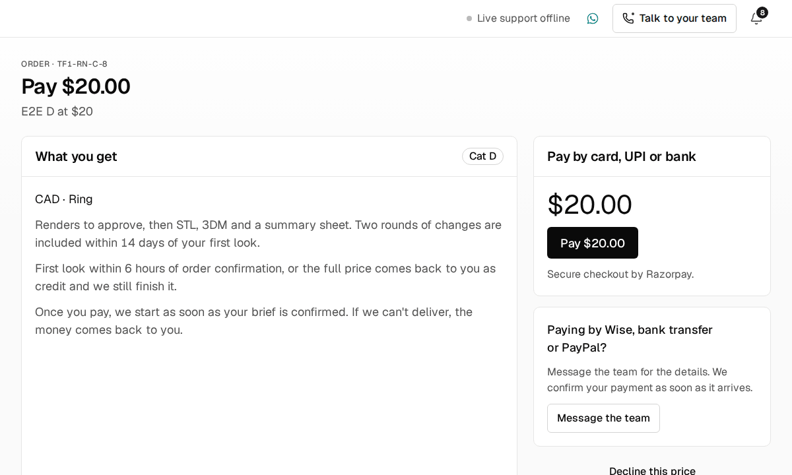
Follow an order
Open Orders and click an order. The top line always says where it is and what, if anything, you need to do. For example:
- "Paid · we're checking your brief";
- "Confirmed · your designer starts shortly";
- "Your designer is working on it";
- "We're checking the design";
- "Your design is ready" with Review;
- "Files ready" with Download.
The order page shows:
- First look: when it is due ("Within 6 h of confirmation"), or Done on time, or Missed. If missed: "The full amount comes back as credit."
- Cards for Files, Payment, Revisions ("0 of 2"), Brief and Timeline. The card that matters now is highlighted.
- What's included.
- The conversation with Your team.
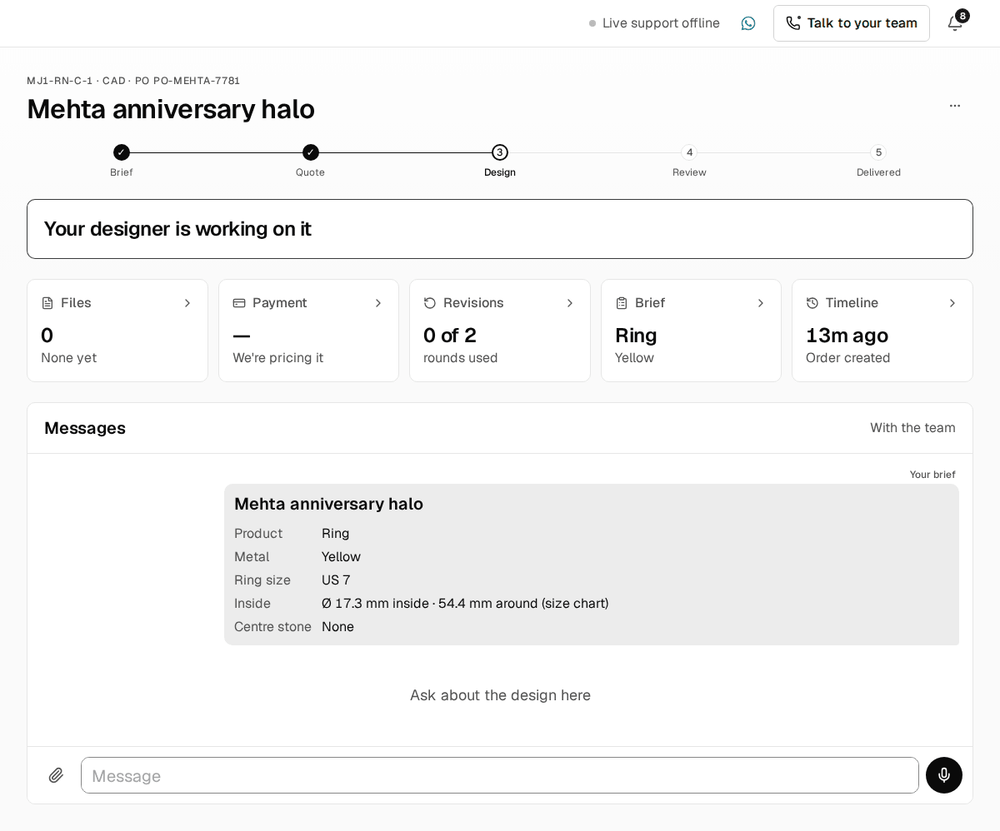
The first-look clock starts only once you have paid and the team has confirmed your brief.
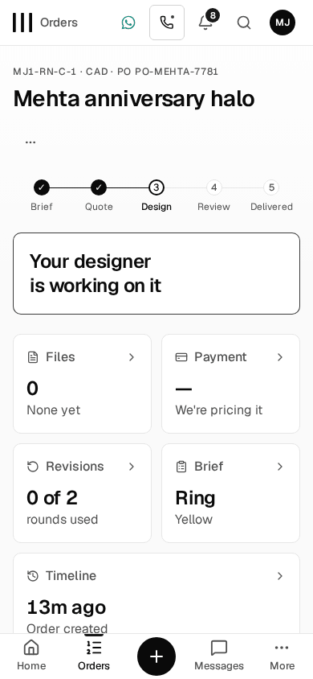
Orders list tabs: Needs you, In progress and the others. Each row shows the next step and when.
Review the first look, ask for changes, approve
When QC passes the design you get a notification and a "First look ready" email. The order shows Review.
- Click Review to open Review renders: the render views and technical sheet for this version.
- To approve:
- Read the note: "Approving unlocks the STL, 3DM and summary sheet. Changes after approval are a new order."
- Click Approve this design.
- To ask for changes:
- Under Ask for changes, write what should change: sizes in mm, which view, which part.
- Click Send changes.
- The page shows "1 of 2 rounds used". Two rounds are included within 14 days of the first look.
- After the included rounds are used, or the 14 days have passed: "Order a change … as a new order". It is priced separately.
Download your files
Open Files in the sidebar (under Your account), or the order's Files card.
- For your caster: STL, print-ready.
- For editing: 3DM (Rhino, layered).
- Summary sheet: weights, stones, sizes.
- Render views, Technical sheet (measurements, diamonds, gold weight).
- QC certificate (PDF) and Weight sheet (PDF) after QC.
- Each file shows its version (v1, v2…), its SHA-256 fingerprint and Download.
- Files not yet unlocked show Locked. "STL, 3DM and the summary sheet unlock when you approve the design."
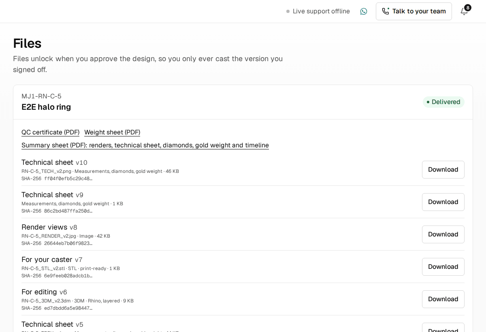
Share a 3D preview with your customer
After approval, the order page offers Share a 3D preview. It shows "Your logo and name · no prices, nothing of ours". Add your logo first under Account → Your logo.
- Choose Open for a number of days.
- Click Create link.
- Copy the link now: "for safety it is shown only once".
- Each link lists when it was Made, its views, and "open until …". +30 days extends it; Turn off stops it.
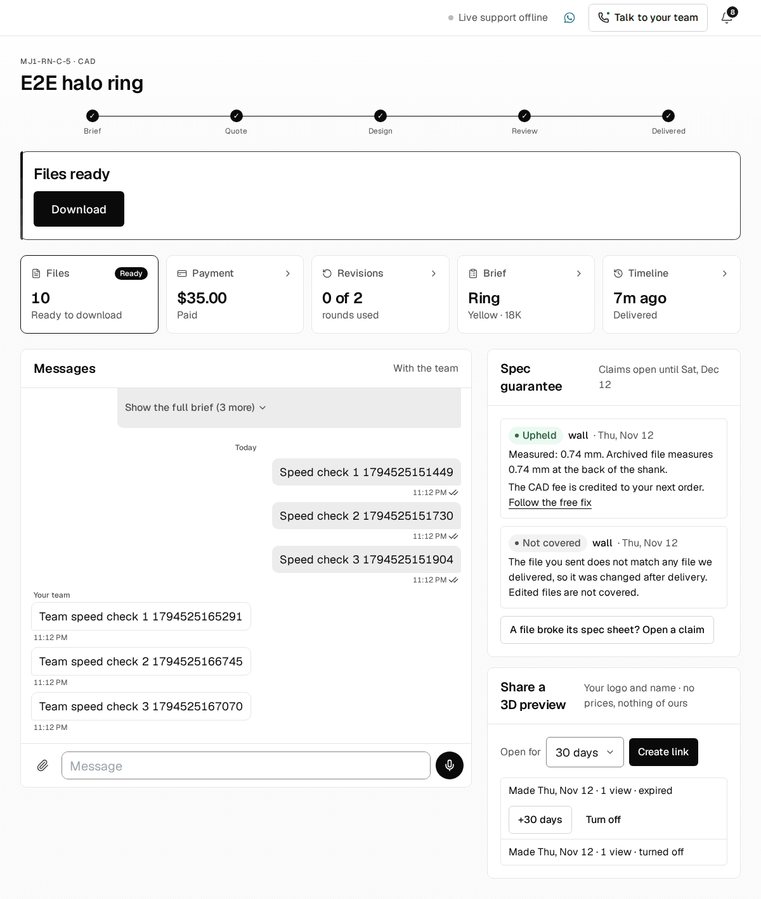
Message the team
Open Messages, or scroll to the conversation on the order. Every order has its own conversation, which starts with your brief. Everyone on our side appears as Your team.
- Type in Message, and click Send (the arrow).
- Attach offers Camera, Photos or File (up to 25 MB). The microphone records a voice message.
- To point at something on a picture, open it → Mark up. Circle, draw or drop numbered pins, then Done.
- One tick means Sent; two means Read.
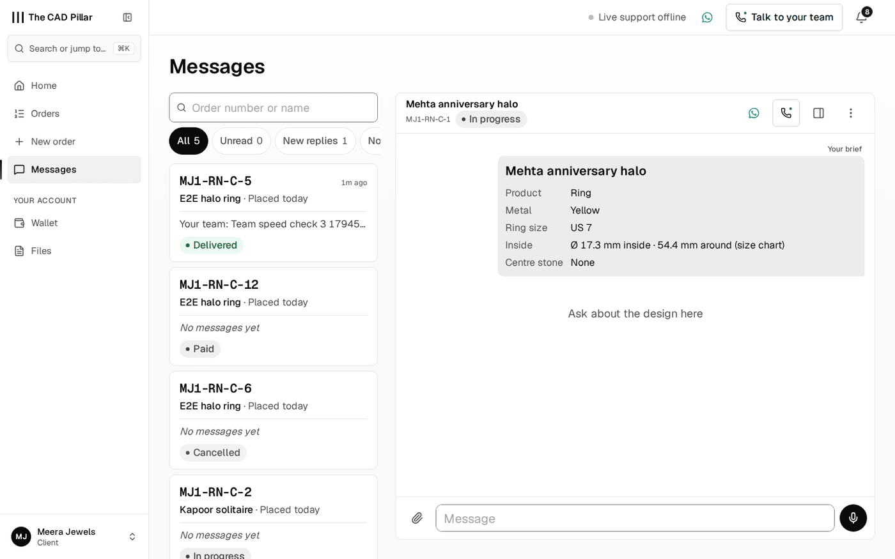
You get an email when the team writes, at most one every 30 minutes per order (you can turn this off).
Report a problem with an order
While the designer is working, or while the first look is with you:
- Open the order → ⋯ (More) → Raise a problem.
- Describe What went wrong?.
- Click Send to the team.
The order pauses ("We're looking into a problem") until the team either sends it back for rework or refunds you. Prefer the conversation for ordinary questions.
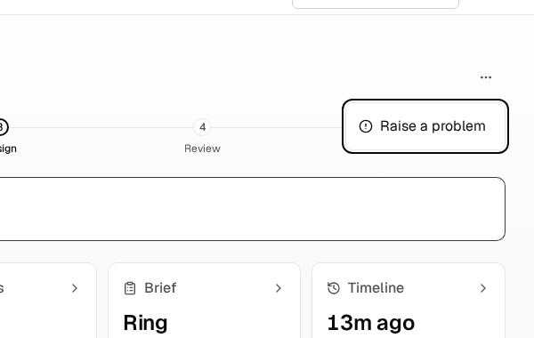
Cancel an order or delete a draft
- Draft: order → ⋯ → Delete draft → confirm ("Delete this draft?").
- Sent or priced, not paid: order → ⋯ → Cancel order → confirm, or Decline this price on the Pay page.
- After paying, you cannot cancel from the portal. Message the team.
Open a spec claim after casting
Every delivered CAD file comes with a QC certificate. If the file broke a number on it, the team fixes it free and credits the CAD fee.
- Open the order → Spec guarantee → A file broke its spec sheet? Open a claim. Claims are open for 30 days after delivery, one at a time.
- Fill in:
- What is wrong, for example "Wall thinner than the certificate says";
- Describe it: where, and what you measured;
- Casting details: caster, alloy, shrinkage allowance, any changes made to the file;
- The file you cast from: the exact STL or 3DM you used;
- Photos of the piece: 1 to 10, ideally with a gauge or calliper in shot.
- Click Send the claim.
Not covered:
- an edited file (its fingerprint will not match);
- a spec you asked to relax (shown on the certificate as a waiver);
- casting and finishing loss.
The order shows the claim's progress: Being re-measured, Being reviewed, Spec met or Not covered. An upheld claim shows Follow the free fix.
Set your factory's standing rules
Account → Master instructions. Write the rules your factory always needs, for example "Shank at least 1.8 mm. Sprue on the inside of the shank." Up to 4,000 characters; leave out your company name and contact details. Click Save. "Saved · on every order": your designer and pod lead see them on every job.
Wallet
Wallet shows:
- Credit: taken off your next order's price by the team;
- Paid on open orders;
- Recent activity.
Tabs: Invoices (paid orders) and Transactions.
Choose which emails you get
Account → Email. Emails about your orders always arrive: quotes, payments, first looks, final files. You can turn off:
- Messages from your team;
- Reminders and follow-ups;
- News and offers (off unless you turn it on).
Designers
For CAD designers in a pod. You see only the jobs your pod lead assigns to you. You never see the client's name, the price, or anyone's pay rate; you see what each job pays you.
What do you need to do?
- Get set up: first sign-in and the agreement
- See what needs you today
- Start a job
- Pause and resume
- Upload the four deliverables
- Make the render image from four views
- Record the model volume, gold weight and diamonds
- Pass your designer check
- Send to QC from the final review
- Handle changes from QC or the client
- Ask your pod lead a question
- Read your pod's materials
- Use the gold and diamond calculators
- See your earnings and add bank details
Get set up
An admin adds you to the platform with your email and places you in a pod. No invitation email is sent: the team tells you directly.
- Go to thecadpillar.com/sign-in and enter the email the team used.
- Enter the code that arrives by email.
- Home shows Finish onboarding: "Sign the designer agreement. Your pod lead can assign you work once it is signed." Click Continue.
- Become a designer opens at Sign agreement. Read the agreement.
- Click I have read and agree — sign. Your signature is recorded against this exact version.
- The page shows Active: "You're onboarded… and are eligible to be assigned work."
- Add your bank details: Earnings and bank details.
Home
Home is your day at a glance:
- Needs you: Changes requested first, then New job and In progress. Each row shows Due or Your time, with Open job.
- Messages: unread messages from your pod lead.
- Pod lead: your pod lead, with Open.
- Payout sent and View earnings, when pay was sent.
- Bank details: "Add your bank details", "Bank details being checked" or "Bank details need fixing".
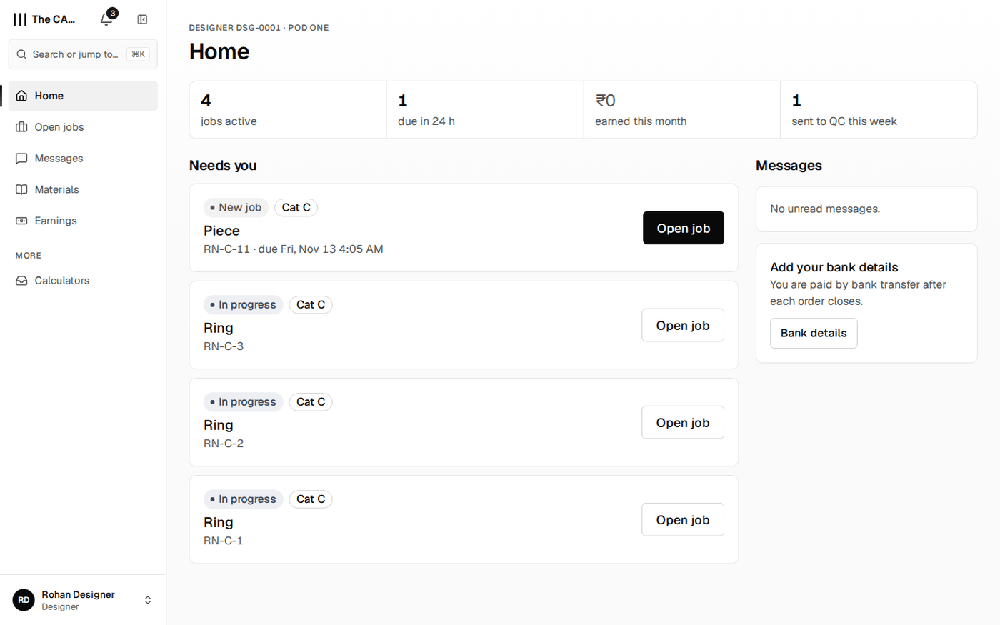
Open jobs (sidebar) lists your jobs in tabs: Open jobs and Submitted to QC.
- Each job shows Your time ("Starts when you do", the time left, or Over time), Due to QC and the Next move.
- "Only the jobs your pod lead has assigned to you. Your timer starts when you press Start work, and stops while you pause."
Start a job
When a job is assigned you get a notification ("You have been assigned to an order."). It appears under Needs you as New job.
- Click Open job.
- Read everything before starting:
- the References (the client's photos with their pins; "Client hidden" is a reminder that you never see who the client is);
- The piece and Specification (the brief);
- the client's Master instructions, when there are any.
- Click Start work. Your time starts: the job's category minutes count down under Your time left.
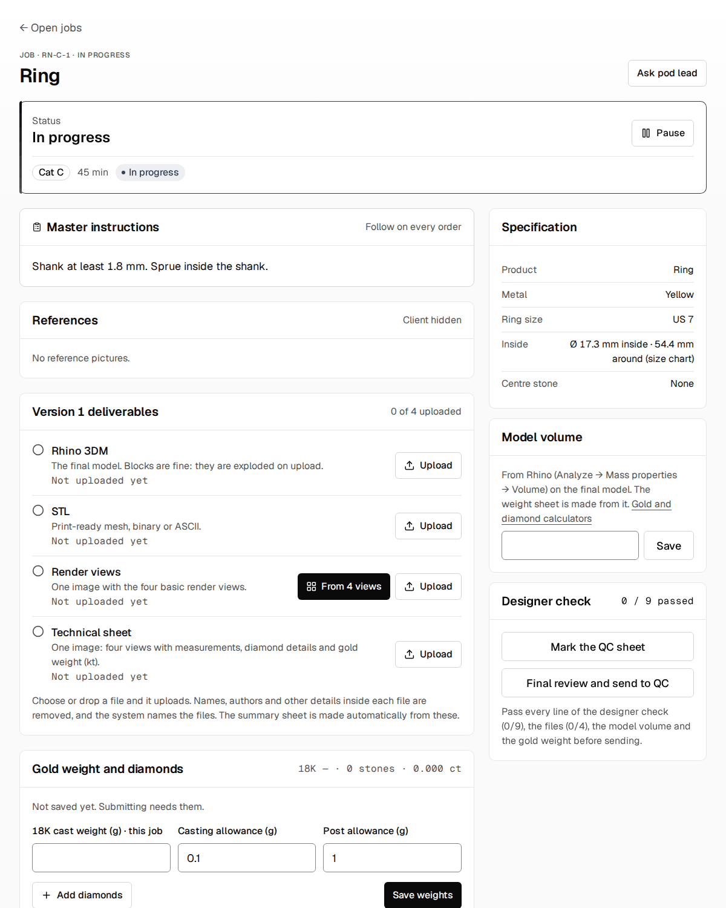
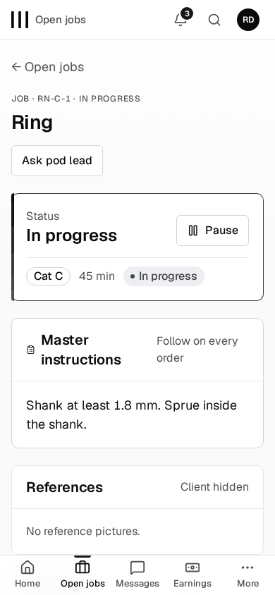
Due to QC is your deadline: the client's first-look time minus the time kept for QC.
- An hour before it, you are notified "…due to QC within the hour".
- Once it has passed, you and your pod lead are both notified.
Pause and resume
Click Pause on the job when you must stop. Your own clock stops and the job shows Paused; Resume starts it again. The Due to QC time does not move. Your pod lead sees paused time.
Upload the four deliverables
Under the job's Version N deliverables, choose or drop each file into its slot:
| Slot | What |
|---|---|
| Rhino 3DM | The final model. Blocks are fine: they are exploded on upload |
| STL | Print-ready mesh, binary or ASCII |
| Render views | One image with the four basic render views (make it from four views) |
| Technical sheet | One image: four views with measurements, diamond details and gold weight (kt) |
- Each slot shows Checking and cleaning… and then the uploaded file. Files can be up to 50 MB.
- Names, authors and other details inside each file are removed, and the system names the files.
- "x of 4 uploaded" counts progress.
Make the render image from four views
On the Render views slot, click From 4 views. A window opens with four equal boxes: Front, Side, Top, Perspective.
- Fill each box in one of three ways:
- snip a view and press Ctrl + V (it goes into the box with the dark outline, then moves to the next empty one);
- drop a picture onto a box;
- click a box to choose a file.
- Arrange the views:
- drag a view onto another box to swap them, or click ⇄ on one and then click the other;
- × clears a box.
- When all four are in ("4 of 4 views"), click Make the render and upload. Each view is fitted whole into an equal square on white, and the result goes into the slot.
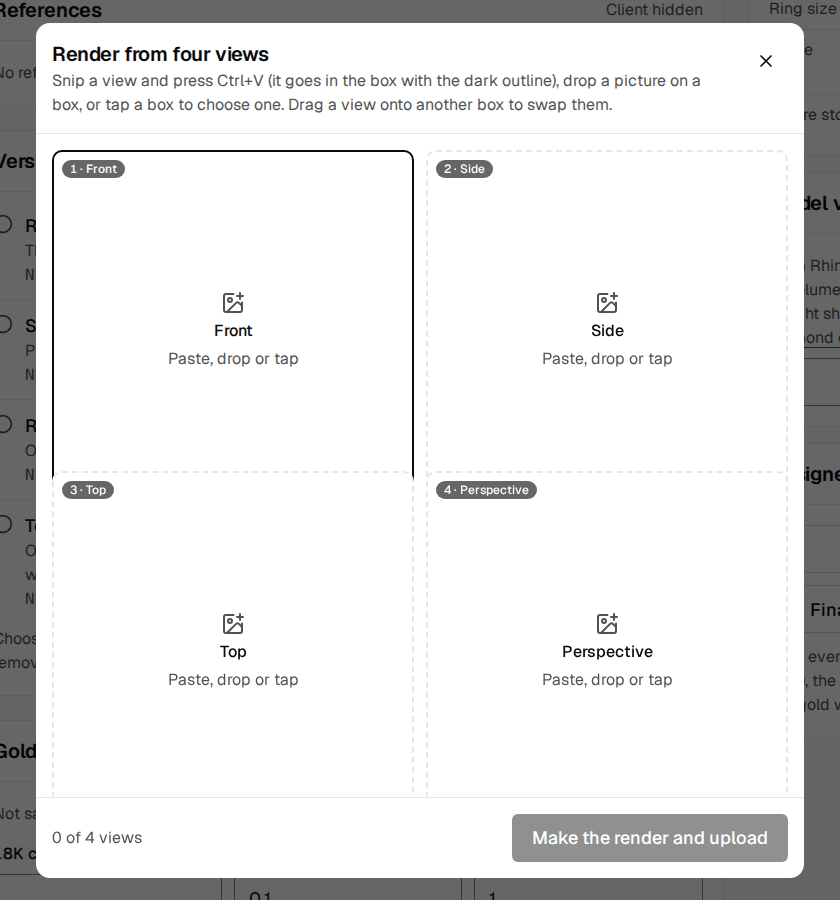
Record the model volume, gold weight and diamonds
- Model volume: in Rhino, use Analyze → Mass properties → Volume on the final model. Enter it in mm³ and click Save. The weight sheet is made from it.
- Gold weight and diamonds:
- Enter the 18K cast weight (g) · this job. The volume gives a hint.
- Enter the Casting allowance (g) and the Post allowance (g).
- Add diamonds for each size of stone (shape, size, pieces). The carat per stone comes from the size charts.
- Click Save weights. No diamonds? Save with no lines.
- Upload or re-upload the Technical sheet. A panel is added underneath it with the cast weight in every metal and the diamonds.
The panel states:
- "Saved and added under the technical image".
- "Saved, but not yet added to the technical image": upload the image again, or save again.
Version 2 starts from version 1's weights.
Pass your designer check
Click Mark the QC sheet. It opens the Designer check, nine lines:
- size and all measurements;
- diamond sizes, colours and count;
- setting type;
- metal colour and karat;
- the client's special remarks;
- overall look;
- no open or naked edges;
- STL mesh tolerance;
- files exported.
For each line:
- optionally enter a Value or finding and a Remark;
- click Pass or Fail;
- Clear undoes a mark; Change reopens a marked line.
Lines can be marked only after Start work. Your signature and the time are recorded when you send to QC.
Send to QC from the final review
Click Final review and send to QC. The page fills the screen:
- left: the client's references (zoom, drag, Full size) and the brief;
- middle: your model: the STL in 3D, the render, the technical sheet;
- right: the designer check, the gold weight and diamonds, and what is still missing.
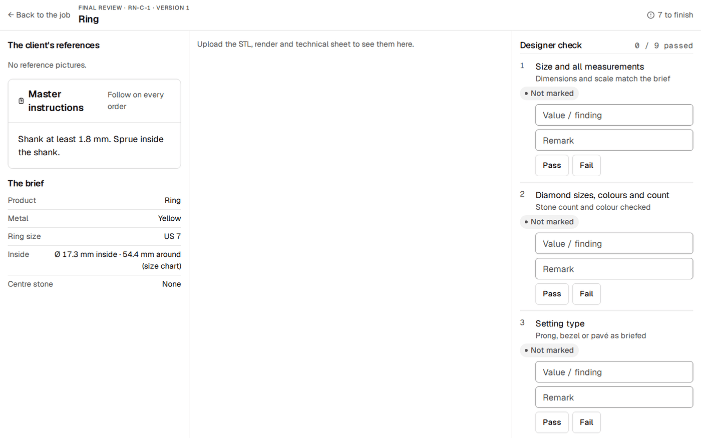
When everything is in, the page says "Everything is in. Matches the references? Send it." Click Send to QC.
Sending needs:
- every designer line passed;
- all four files;
- the model volume;
- the gold weight.
The page lists what is missing, for example "Upload the STL" or "Enter the model volume".
Handle changes from QC or the client
If QC sends the job back, or the client asks for changes, it returns as Changes requested at the top of Home.
- Open the job. The notes are under Pod lead notes (QC: each failed line with its finding and remark) or Changes the client asked for.
- Click Start work. This starts a new version, with fresh slots and a fresh check.
- Make the changes, upload, check, and send to QC again.
QC send-backs are part of the job. Changes the client orders after approval are paid as a new job.
Ask your pod lead a question
Ask pod lead on the job, or Messages. Your conversation is with your pod lead and admins only: "Client questions go through your pod lead." You never see or write in the client's conversation. A message the team forwards from the client appears as "Forwarded from the client".
Pod materials
Materials lists the instructions, charts and references your pod lead shares, for example a prong-size chart. Click Open. You can read them; only your pod lead or an admin adds or removes them.
Calculators
Calculators (/) works out the gold casting weight per metal and the diamond weight from the size charts as you type. Nothing is saved.
Earnings and bank details
Earnings lists what each job pays you, added when its order closes and paid by bank transfer: "Paid per job, after the order closes". QC send-backs are part of the job.
Bank details (Account → Payout details, or Add bank details on Earnings):
- Enter:
- Account holder name, exactly as at your bank;
- Bank account number, twice;
- IFSC;
- Account type;
- PAN.
- Click Save payout account.
The details are checked before payouts are released; until then they show as being checked. A name, account number or IFSC that does not match the bank is the most common reason a payout fails. Only Indian bank accounts are paid at present.
You are notified "Your pay of ₹… for this job was sent." when the team pays a batch.
Pod leads
For the lead of a pod. You assign your pod's jobs to its designers, check every version before the client sees it (QC), keep the team moving, and can place orders for clients. You see the designer's pay and your pod pay on each job, but never the client's price or payments.
What do you need to do?
- Find what needs a check
- Assign a job to a designer
- Confirm an order's brief
- Run the QC review: pass or send back
- Record measurements and client waivers
- Move a job, take it back, or escalate it
- Place an order for a client
- Watch performance and bottlenecks
- Share instructions and charts with the pod
- Talk to the designer or the client
- Re-measure a spec claim
- See your earnings
Your first sign-in
Sign in as described in Signing in. You land on the QC queue. Your sidebar:
| Group | Items |
|---|---|
| Work | QC queue, Team board, All orders, Create order |
| Inbox | Messages |
| Team | Performance, Materials |
| Money | Earnings |
| More | Calculators |
If your sidebar is empty of designers, or the board says "No designers in your pod yet", ask an admin to place designers in your pod. If you have no pod at all, an admin uses Create their pod.
The QC queue
QC queue (/) shows only what needs a check, in your pod(s):
- Awaiting QC · oldest first, with Start review;
- In your review, with Continue.
Each row shows the designer, the version, when it was submitted and how many lines you have marked. The figures across the top count jobs waiting for QC, in your review, orders paid, not yet assigned, and your QC earnings · month.
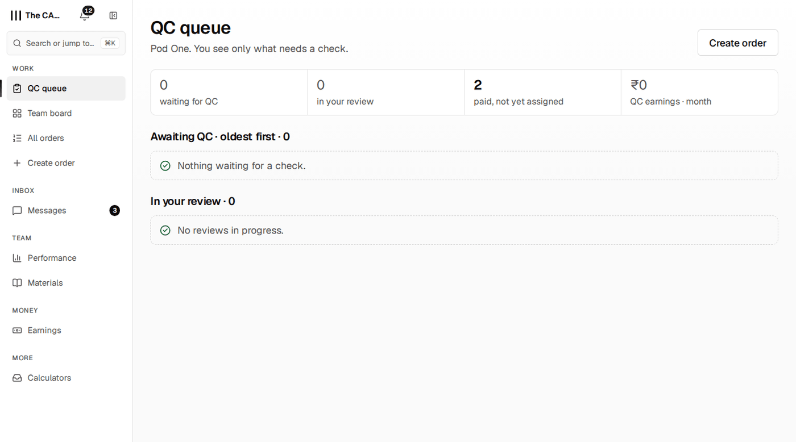
The Team board
Team board (/) is "who is working on what":
- the Unassigned column, with minutes waiting;
- one column per designer, with their reference and a load bar ("Free · 0 of 480 min", or "270 of 480 min", or "over the shift");
- each job card with its status (Paused when paused) and its timer.
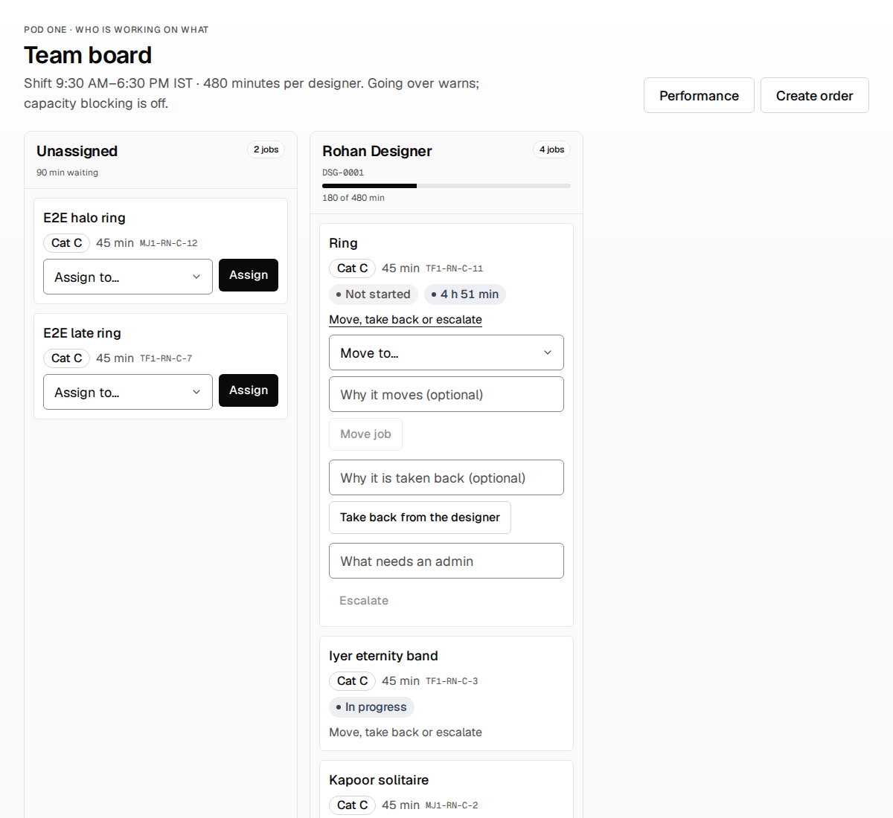
Assign a job to a designer
Before you start:
- the order is Paid and in your pod;
- it has a category (otherwise the card says Set a category first);
- ideally it is confirmed, so the client's clock is running.
- Team board → Unassigned → the job → Assign to….
- Choose the designer. Each option shows their open and shift minutes, for example "DSG-0003 · 120/480".
- Greyed options marked "· not signed" are designers who have not signed the agreement, or who are suspended. You cannot choose them; ask an admin.
- Click Assign.
You can also assign from the order page: Next step → Assign a designer → Designer → Assign.
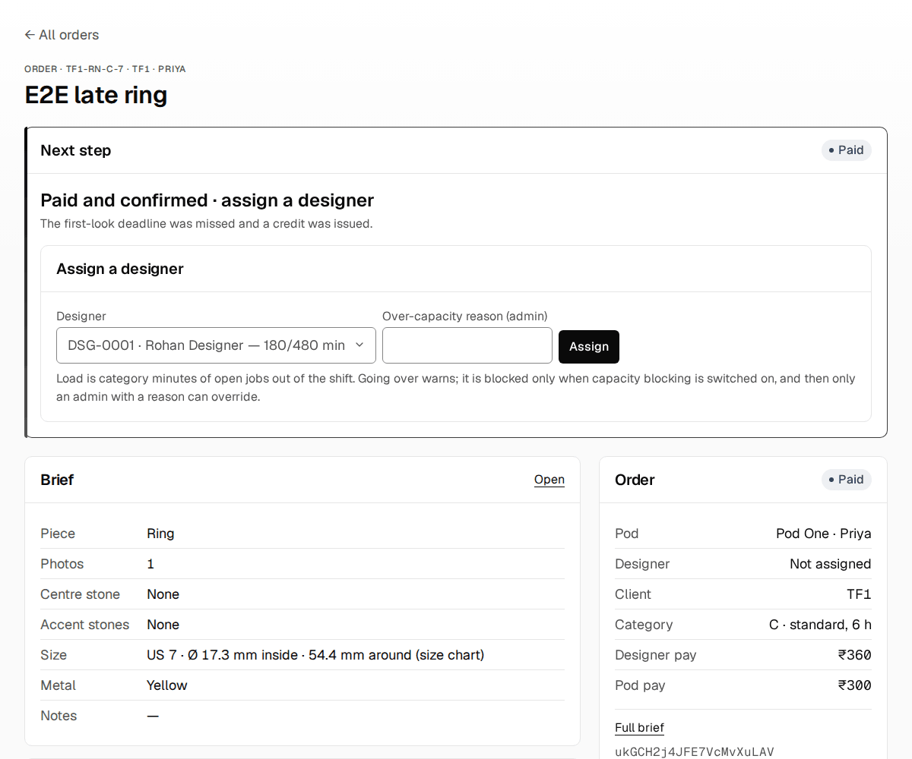
What happens:
- The designer is notified "You have been assigned to an order."
- The job moves into their column.
- The order reads "Assigned to … · not started yet".
- Pay is set at that designer's rate.
- Going over the shift only warns, unless an admin has switched on capacity blocking.
Confirm an order's brief
When the brief is complete and any questions are answered, open the order and click Confirm order. If the order is paid, this starts the client's first-look clock. It happens once and cannot be undone.
Run the QC review
You are notified "A job in your pod is ready for QC." Open QC queue → Start review.
The page shows:
- First look due;
- the Version tabs and the designer's files with Download;
- the QC checklist with the QC manager lines;
- the Decision;
- Measured specification;
- Client waivers;
- The brief;
- References.
The designer has already passed all nine of their lines ("Signed by DSG-… at submission").
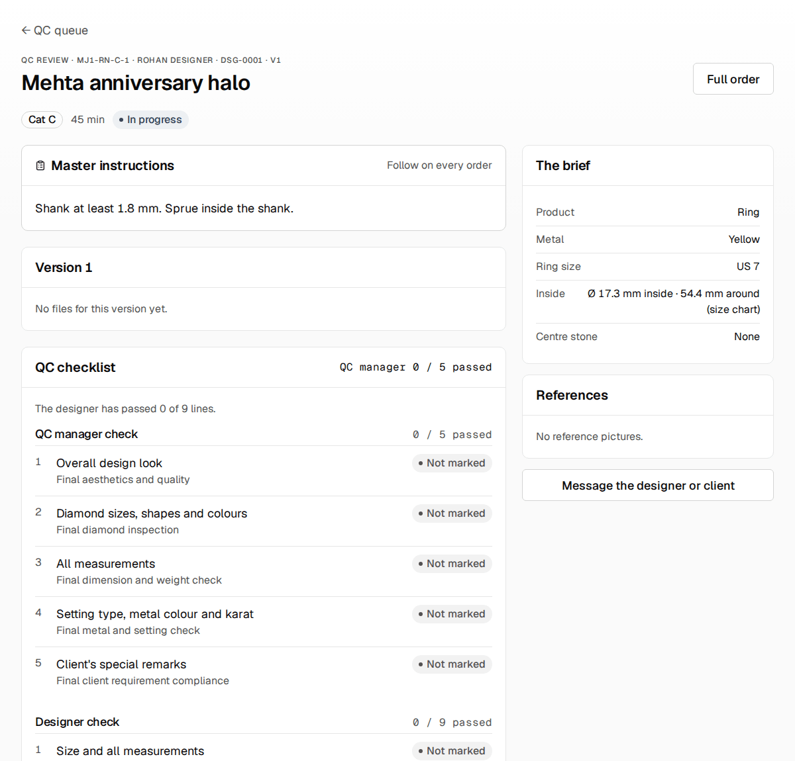
Mark the five QC manager lines:
- overall design look;
- diamond sizes, shapes and colours;
- all measurements;
- setting type, metal colour and karat;
- the client's special remarks.
For each line:
- enter a Value or finding and a Remark if useful;
- click Pass or Fail;
- Clear undoes a mark.
Then decide:
- Send back · revision needed.
- Fail at least one line, or write a Revision note (required when no line failed).
- The panel shows "Revision needed · the designer receives these failed lines:", plus a box for "Anything else for the designer".
- Click Send back · revision needed.
- The order becomes Revision requested, and the designer sees your lines under Pod lead notes. A send-back does not use the client's change rounds.
- Approve · pass to client.
- The button opens once every QC manager line has passed and, for CAD, the measurements are recorded. It reads "Approve needs every QC manager line passed" until then.
- Click Approve · pass to client.
- The client is notified and emailed "First look ready", and the clock stops.
Record measurements and client waivers
Under Measured specification ("Needed to pass · goes on the certificate"):
- Enter Minimum wall (mm), Minimum prong (mm), Inner diameter (mm), Mesh tolerance (mm), Ring size (for example
US 7), Open edges ("Must be 0 to pass"), and each Stone seat, for example "Centre oval 9 × 7". The designer's model volume and the minimums are shown for reference. - Click Record measurements. Click Update measurements to change them later.
Client waivers. When the client asks for less than a minimum (for example a 0.6 mm wall):
- Choose Spec….
- Enter What the client asked for and a Note.
- Click Add waiver.
The waiver is printed on the certificate, and a later spec claim on it is not covered.
Move a job, take it back, or escalate it
Team board → the job card → Move, take back or escalate. The same controls are on the order page under Other actions ›.
- Move:
- Choose Move to….
- Enter Why it moves. It is required once work has started.
- Click Move job. "Job moved" confirms it.
- The new designer presses Start work.
- Take back:
- Enter Why it is taken back (required once started).
- Click Take back from the designer.
- The order waits for a designer again: "Taken back · waiting for a designer". The designer and the admins are notified.
- Escalate:
- Enter What needs an admin.
- Click Escalate. "Escalated to admin" confirms it.
- Every admin is notified. When one resolves it, you are notified, and Performance → Escalated to admin shows the resolution.
Place an order for a client
Create order opens the same form admins use: find or add the client, describe the order, add at least one screenshot of the request, Place order. The order goes into your pod. The steps are in the Admin Operations Manual ("Place an order for a client"); the walkthrough shows where it fits.
Performance
Performance (/): "Live load, bottlenecks and each designer's output, from recorded work only. Compared with the period before."
- Filters: Period, From, To, Designer (Everyone), Category (All), Job type (All), then Apply. Reset clears them. The download buttons give Excel, CSV and PDF.
- Figures: Submitted to QC, Passed QC, On time, First-pass QC, Avg working time, Avg turnaround.
- Bottlenecks now:
- Waiting for a designer, Waiting for QC, Overdue to QC, Paused;
- Idle designers;
- an Uneven load hint, with a link to the team board.
- Escalated to admin: your open escalations.
- Designers: each designer's Avg work, Avg turnaround, On time, First-pass QC, QC returns and Client changes. Click one for their page.
A designer's page shows:
- their pay rate ("₹8.00 a minute", or "own rate, set by an admin"); you can see it but not change it;
- what they hold now;
- their Job history and Activity (the last 200 events).
Share instructions and charts
Materials → Share with your pod:
- Choose the Pod.
- Enter a Title, for example "Prong size chart".
- Choose the File (PDF, PNG, JPEG, ZIP or STEP, up to 50 MB).
- Describe What it is for.
- Share it.
"Shared with the pod" confirms it, and every designer in the pod can open it.
To take one down: Remove → "Remove '…'? Designers in the pod will no longer see it." → Remove.
Talk to the designer or the client
Each order has two tabs:
- Client: the conversation with the client; the designer never sees it, and to the client you are "Your team".
- Designer: the conversation with the designer; the client never sees it.
You are notified of new messages from the client and from the designer. Under a message, Forward to designer (or Forward to client) passes it to the other side after a confirmation. Check that a client's message names nobody before forwarding it to the designer.
Re-measure a spec claim
When a client opens a spec claim, you are notified "A client opened a spec claim. Re-measure the archived file."
- Open the order → Spec claims.
- Compare their file (it says whether the file matches the delivered version) and the photos.
- Enter the Re-measured value and a Decision note.
- Click Uphold · free fix + credit or Spec met · reject.
An upheld claim creates a free fix order for you to assign, with the 6-hour clock running.
Earnings
Earnings: "Paid per review · 50% of the designer's pay, at least ₹300". It lists each job's pod pay and the Pod pay by category table. Pay is added when the order closes. Add your bank details with Add bank details: the same form as designers use, under Earnings and bank details.
Admins and staff
The team that prices, takes payment, confirms, delivers and manages people. This chapter gives the outline and the everyday tasks. The standalone The CAD Pillar | Admin Operations Manual covers every admin screen and control, with procedures, checks and troubleshooting.
Who counts as an admin
A full Admin holds three staff roles: Sales, Ops and Finance. Staff who hold only one see the same Admin workspace, but the database refuses what their role may not do. See What makes someone an "Admin" for the split.
What do you need to do?
- First sign-in and the Queue
- Price an order
- Record a transfer payment
- Confirm an order
- Deliver and close
- Pay the team
- Add a designer
- Change roles or suspend
First sign-in and the Queue
You land on the Queue: orders where the team has the next move, disputes first, then the nearest deadline.
- The counters across the top (Awaiting quote, Awaiting payment, Ready to assign, With designer, In QC, With client, Ready to deliver, Delivered, Ready for payout, Dispute) filter the list when clicked.
- Each row says Why it's here and offers one button: Price it, Confirm, Deliver and so on.
- Alerts above the list flag missed first looks, escalations, disputes and spec claims.
The sidebar groups the rest:
- Work: All orders, Messages, Create order;
- Money: Billing;
- People: Clients, Access, Applications, Leads;
- System: Settings;
- More: Designers.
Price an order
- Queue → Price it.
- Choose the Category (A–L).
- Leave Price $ (optional) empty for the band ($35 A–C, $85 D–F), or enter a price. G–L need a price and Deadline h (G–L).
- Click Set quote.
The price cannot be changed afterwards, and the client is told at once. Watch the "Payouts are N% of the price" line.
Record a transfer payment
When a Wise, bank or PayPal payment arrives:
- Open the order.
- Choose Paid by and enter the Reference.
- Click Mark paid.
Card payments mark themselves paid.
Confirm an order
- Open the paid order.
- Choose the pod if asked (Choose).
- Click Confirm order. This starts the client's first-look clock, and the pod lead assigns a designer.
Deliver and close
- After the client approves, open the order and click Delivered.
- When finished, click Closed. Closing makes the team's pay owed.
Pay the team
- Billing → Payouts → Export … as a batch → Download CSV.
- Pay by bank transfer.
- Click Mark batch paid. Each payee is notified.
Add a designer
- Designers → Add designers.
- Enter
email - Nameand click Add designers. - Tell them to sign in. No email is sent.
- On their page, choose their Pod and click Save.
They can be assigned only once they have signed the agreement (why).
Change roles or suspend
Access → find the person.
- Role saves at once. Choosing Pod lead creates their pod.
- ⋯ → Suspend… → type
suspend→ Suspend account freezes them. Reinstate undoes it. - The last active Ops account cannot be demoted.
Exists versus can receive work
A designer receives work only when all of these are true:
- they have an account with the Designer role;
- they have signed the current agreement;
- they are Active, not Suspended;
- they are in the order's pod.
Until then the pod lead sees them greyed out, marked "· not signed" or "(not signed up)". Check them on Designers: Waiting to sign in, Not in a pod.
Make someone a full Admin
The Access screen sets one role, the primary role.
- Set the primary role to Ops on Access.
- Ask technical support to add Sales and Finance as additional roles. This is not available on any screen.
- Check the person's Account page: it should list all three roles.
How the accounts work together
One order, from brief to payout, seen from every seat.
This walkthrough follows one fictional order through every account. The names are invented: the client Northline Jewelers (client code NJ1), the piece "Aurora halo ring", a pod called Rhino pod, and two designers, DSG-0007 (new) and DSG-0003. The order includes one blocked handoff, one QC send-back and one client revision round.
Step 1 · The client sends the brief
- Who: the Northline buyer (Client).
- Control: New order → CAD design → fill The piece, Stones and Size & metal → Review → Send for a price.
- Changes: the page "Sent for a price" opens. On the order, the status sentence reads "We're pricing your brief".
- Received by: nobody gets a notification. The client receives the "Order received" email.
- Admin checks: Queue. The Awaiting quote counter goes up by one, and the order appears under Needs a move with Price it.
Step 2 · The team prices it
- Who: an Admin (or a Sales member).
- Control: Queue → Price it (opens the order) → Next step card → Category
C, Price $ (optional) left empty (the band price, $35) → Set quote. - Changes: the status pill becomes Quoted, and the order card shows Price, Designer pay and Pod pay.
- Received by: the client gets an in-app notification "Your order has been quoted." and the "Quote ready" email. Their order shows "Your price is ready" with Pay & start.
- Admin checks: the Queue counter Awaiting payment.
Step 3 · The client pays
- Who: the client, by card or UPI. Or, for a Wise transfer, an Admin or Finance member.
- Control (card): Pay & start → the pay button → Razorpay checkout. Control (transfer): the order → Next step → Paid by
Wise transfer, Reference (the transfer reference) → Mark paid. - Changes: the status becomes Paid. With only one pod led, the order joins Rhino pod automatically.
- Received by: the client gets the "Payment received" email and sees "Paid · we're checking your brief".
- Admin checks: the Queue row now reads "Paid · confirm the order to start the clock", with Confirm.
Step 4 · The admin confirms the brief
- Who: an Admin (a pod lead may also confirm).
- Control: the order → Next step → Confirm order.
- Changes: the first-look clock starts (6 hours for category C). The Queue row reads "Paid and confirmed · the pod lead assigns a designer".
- Received by: the client is notified "Your order is confirmed and paid — the first-look clock has started." and gets the "Order confirmed" email with the due time. The pod lead is notified "An order in your pod is confirmed and paid — the clock is running."
- Admin checks: the First look column on the Queue shows the time left.
Step 5 · Blocked handoff: the new designer cannot be chosen
- Who: the Rhino pod lead.
- Control: QC queue → Team board → the order under Unassigned → Assign to….
- What they see: DSG-0007 is listed but greyed out, marked "· not signed" ("(not signed up)" on the order page). The admin added DSG-0007 to the pod yesterday, but DSG-0007 has not yet signed the designer agreement.
- Resolution: the pod lead writes to an admin, or assigns DSG-0003 instead. The admin opens Designers → DSG-0007, sees Waiting to sign in, and sends DSG-0007 the sign-in instructions shown on that page. Once DSG-0007 signs in and presses I have read and agree — sign, the status becomes Active and the name is selectable.
- Admin checks: Designers. The status pill reads Active, and the Pods page no longer says "Not signed".
Step 6 · The pod lead assigns
- Who: the pod lead.
- Control: Assign to… → DSG-0007 ·
0/→ Assign.480 - Changes: the job moves into DSG-0007's column on the team board. The order says "Assigned to DSG-0007 · not started yet". Designer pay is set at DSG-0007's rate.
- Received by: DSG-0007 is notified "You have been assigned to an order." The job appears on their Home under Needs you as "New job".
- Admin checks: the Queue counter With designer. On the order, Designer shows DSG-0007.
Step 7 · The designer builds version 1 and sends it to QC
- Who: DSG-0007.
- Control: Open jobs → the job → Start work. Upload the four files (Rhino 3DM, STL, Render views, Technical sheet). Save the Model volume. Fill Gold weight and diamonds → Save weights. Mark every Designer check line Pass. Then Final review and send to QC → Send to QC.
- Changes: the job reads "With your pod lead for QC".
- Received by: the pod lead is notified "A job in your pod is ready for QC." The client is notified "Work has been submitted on your order." and sees "We're checking the design".
- Admin checks: the Queue counter In QC.
Step 8 · QC sends it back once
- Who: the pod lead.
- Control: QC queue → Awaiting QC → Start review. Under All measurements, type a finding and a remark, then Fail. Then Send back · revision needed.
- Changes: the status becomes Revision requested. QC send-backs do not use up the client's revision rounds.
- Received by: DSG-0007 sees the failed line under Pod lead notes on the job, then presses Start work again and sends version 2.
- Admin checks: the order Timeline shows the send-back. The Queue counter is back to With designer.
Step 9 · QC passes it to the client
- Who: the pod lead.
- Control: mark all five QC manager lines Pass → fill Measured specification → Record measurements → Approve · pass to client.
- Changes: the status becomes Ready to preview. The first look is recorded and the clock stops: on time.
- Received by: the client is notified "Your order is ready to preview." and gets the "First look ready" email.
- Admin checks: the Queue counter With client. The First look column says Done.
Step 10 · The client asks for one change
- Who: the client.
- Control: Review → under Ask for changes, describe the change (sizes in mm, which view, which part) → Send changes.
- Changes: the client's page shows "1 of 2 rounds used" and "Your changes are being made".
- Received by: DSG-0007 and the pod lead are notified "Changes requested (round 1)…". The job comes back as "Changes requested" with Changes the client asked for.
- Admin checks: the order's Revisions section lists round 1. DSG-0007 sends version 3, and QC passes it as in steps 7–9.
Step 11 · The client approves
- Who: the client.
- Control: Review → Approve this design.
- Changes: the status becomes Approved. The STL, 3DM and summary sheet unlock in the client's Files.
- Received by: DSG-0007 and the pod lead are notified "The client approved…". The client gets the "Design approved" email.
- Admin checks: the Queue row reads "Client approved · deliver the files" with Deliver.
Step 12 · The team delivers and closes
- Who: an Admin (or an Ops member).
- Control: the order → Next step → Delivered. Later, Next step → Closed.
- Changes: the order goes from Delivered to Closed. Closing creates the designer's and the pod lead's pay as Owed.
- Received by: the client gets "Your order has been delivered." and the "Files delivered" email.
- Admin checks: the Queue counter Ready for payout. Payouts lists two owed rows for this order.
Step 13 · The team is paid
- Who: an Admin (or a Finance member).
- Control: Billing → Payouts → Export … as a batch → Download CSV. Pay by bank transfer from the CSV, then Mark batch paid.
- Received by: DSG-0007 and the pod lead are notified "Your pay of ₹… for this job was sent." The amount shows under their Earnings.
- Admin checks: the batch no longer says "not yet marked paid".
Reference
Order statuses and who acts next
Every order carries one status. The team sees it as a status pill (for example Paid) and, on the Queue, as a stage (for example Ready to assign). The client sees a plain sentence instead (for example "Paid · we're checking your brief"). The table lists them in the order a normal job moves through them.
| Status pill | Queue stage | What it means | Who acts next, and the control that moves it on | What the client sees | What the designer sees |
|---|---|---|---|---|---|
| Draft | (not on the Queue) | The client is still writing the brief | Client: Send for a price on the Review step | "Finish your brief" · Continue | Nothing |
| Submitted | Awaiting quote | Brief sent; no price yet | Sales or Admin: Set quote on the order | "We're pricing your brief" | Nothing |
| Quoted | Awaiting payment | Price set and shown to the client | Client: Pay & start. Or Finance/Admin: Mark paid for a transfer | "Your price is ready" · Pay & start | Nothing |
| Paid | Ready to assign | Money received. Still needs a pod, a confirmation and a designer | Admin: choose the pod (if asked) and Confirm order. Pod lead: Assign | "Paid · we're checking your brief", then after confirmation "Confirmed · your designer starts shortly" | Nothing |
| Assigned | With designer | A designer has the job but has not started | Designer: Start work | "Your designer is working on it" | The job under Open jobs ("New job") |
| In progress | With designer | The designer is working; their clock runs (it stops while paused) | Designer: Send to QC from the final review | "Your designer is working on it" | Their job, with the clock |
| Work submitted | In QC | Momentary: the platform moves it to QC review at once | — (automatic) | "We're checking the design" | "Submitted to QC" |
| In QC review | In QC | The pod lead checks the work | Pod lead: Approve · pass to client or Send back · revision needed | "We're checking the design" | "With your pod lead for QC" |
| Revision requested | With designer | Back with the designer: a QC send-back or the client's changes | Designer: Start work, then send to QC again | "Your changes are being made" | "Changes requested" with the notes |
| Ready to preview | With client | The first look (or a new version) is with the client | Client: Approve this design, Send changes, or Raise a problem | "Your design is ready" / "A new version is ready" · Review | Nothing new |
| Approved | Ready to deliver | Client approved; their files unlock at once | Ops or Admin: Delivered | "Files ready" · Download | Notification "The client approved this job." |
| Delivered | Delivered | Delivered to the client | Ops or Admin: Closed (the client's screen has no close button) | "Files ready" | Nothing new |
| Closed | Ready for payout | Finished. Designer pay and pod pay become owed | Finance/Admin: pay through Payouts | "Files ready" | Pay appears under Earnings |
| Payout released | (done) | Escrow released to the payout records | — | "Files ready" | — |
| Disputed | Dispute | The client raised a problem; the order is frozen | Ops: Send back for rework, or Finance: Refund the client… | "We're looking into a problem" · Message | Notification "A dispute was raised on your order." |
| Refunded | (done) | Money returned to the client | — | "Refunded" | — |
| Cancelled | (done) | Cancelled before payment, or a price declined | — | "Cancelled" | — |
The first-look clock. For standard pieces (categories A–F) the promise is a first look within 6 hours. The clock starts when the order is both paid and confirmed, whichever happens last. It stops when the pod lead passes the work to the client. Complex pieces (G–L) have the deadline set with the price. The designer's own deadline ("Due to QC") is the first-look deadline minus the time kept for QC (60 minutes by default).
Who sees what
| Item | Client | Designer | Pod lead | Admin |
|---|---|---|---|---|
| The order's price, payments and refunds | Own orders | Never | Never | All |
| Designer pay on a job | Never | Own jobs only | Jobs in their pod | All |
| Pod pay on a job | Never | Never | Jobs in their pod | All |
| A designer's pay rate (₹ a minute) | Never | Never | Their pod's designers, read-only | All; can change |
| Client identity (business, name, email, phone) | Own | Never; sees a job code only | Client code; contact details on orders the team placed | All (Create order search) |
| Designer identity | Never; sees "Your team" | Own | Their pod's designers, by name | All |
| Brief, reference pictures and pins | Own orders | Assigned jobs | Pod orders | All |
| Client's master instructions | Own (Account) | Assigned jobs | Pod orders | All; can edit for a client |
| Screenshots of an emailed or WhatsApp request | Own orders | Never | Pod orders | All |
| Client conversation (Client tab) | Own orders, as "Your team" | Never | Pod orders | All |
| Designer conversation (Designer tab) | Never | Own jobs | Pod orders | All |
| Render views and technical sheet | Once QC passes (Ready to preview onwards) | Own jobs | Pod orders | All |
| 3DM and STL files | From approval on; shown as Locked before | Own jobs | Pod orders | All |
| QC certificate and weight sheet | After QC passes | No | Pod orders | All |
| Summary sheet (PDF) | After approval | No | Pod orders | All |
| 3D preview link | Creates and shares it | No | No | No |
| Designer bank details and identity documents | Never | Last 4 digits of their own account | Never | All; every full view and document open is logged |
The client's emails carry no designer, pod lead or staff names.
Notifications and email
The platform tells people about events in three ways. They are separate, and only one of them proves a message reached an inbox.
| Channel | Where it appears | Who gets it | Depends on |
|---|---|---|---|
| In-app notification | The bell (top of the sidebar; top bar on a phone), the unread count on Messages, and a pop-up "toast" with Open while the portal is open | Clients, designers, pod leads and admins, as listed below | Nothing: always written |
| Phone or desktop push | The device's own notification centre | Anyone who turned on Notifications under Account → On this device on that device | Push keys configured on the server; the 5-minute dispatch job running. Text never names people or amounts |
| The person's inbox | Clients (order emails), designer applicants, website enquirers | EMAIL_ on the server. Until then every email goes to the test inbox instead |
In-app notifications: what triggers them
| Event | Who is notified | Text they see |
|---|---|---|
| Client writes in the client conversation | The order's pod lead | "New message from the client." |
| Team writes in the client conversation | The client | "New message from the team." |
| Designer writes in the designer conversation | The order's pod lead | "New message from the designer." |
| Team writes in the designer conversation | The designer | "New message from the team." |
| Order quoted | Client | "Your order has been quoted." |
| Order paid and confirmed (clock starts) | Client; pod lead | "Your order is confirmed and paid — the first-look clock has started." / "An order in your pod is confirmed and paid — the clock is running." |
| Designer assigned | Designer | "You have been assigned to an order." |
| Job moved to another designer | Old designer; new designer (when it was waiting on changes) | "A job was moved to another designer" / "A job waiting on changes was moved to you" |
| Job taken back | Designer; every admin | "A job was taken back from you" / "A job was taken back from its designer and is waiting for a designer again" |
| Designer sends to QC | Pod lead; client | "A job in your pod is ready for QC." / "Work has been submitted on your order." |
| Due in 60 minutes / overdue to QC | Designer (both); pod lead (overdue) | "Job … is due to QC within the hour" / "Job … is past its due time to QC" / "Job … is overdue to QC" |
| Pod lead passes QC | Client | "Your order is ready to preview." |
| Client asks for changes | Designer; pod lead | "Changes requested (round n)…" / "The client asked for changes (round n)." |
| Client approves | Designer; pod lead | "The client approved this job." / "The client approved an order in your pod." |
| Order delivered | Client | "Your order has been delivered." |
| First-look deadline passed | Pod lead | "The first-look deadline on an order in your pod has passed." |
| Late credit issued | Client | "We missed the first-look deadline on your order — a credit has been issued." |
| Client raises a problem (dispute) | Designer | "A dispute was raised on your order." |
| Dispute resolved | Client; designer | "A dispute on your order was resolved." |
| Pod lead escalates a job | Every admin | "A pod lead escalated a job" |
| Admin resolves an escalation | The pod lead who raised it | "An admin resolved your escalation" |
| Client opens a spec claim | Pod lead | "A client opened a spec claim. Re-measure the archived file." |
| Spec claim decided | Client (and the pod lead, for the free fix when upheld) | Result of the claim |
| Client orders a change after approval | Pod lead | "A client ordered a change to an approved design. It needs a quote." |
| Team places an order for a client, with the email box ticked | Client | "The team placed an order for you." |
| Payout batch marked paid | Each payee | "Your pay of ₹… for this job was sent." |
| Order refunded | Client | "Your order has been refunded." |
Emails
Client emails are sent by the database event, never by a page, and each can be sent only once per event.
| Event | Client can turn it off | |
|---|---|---|
| Client creates their own account | Welcome | No |
| Portal order sent for a price | Order received | No |
| Order quoted (each new price) | Quote ready | No |
| Quote unpaid for 24 hours | Quote reminder | Yes (Reminders) |
| Payment received | Payment received | No |
| Paid and confirmed (clock starts) | Order confirmed, with the due time in US Eastern time | No |
| First look ready / revised design ready | First look ready / Revised design ready | No |
| Changes requested | Revision received | No |
| Design waiting 48 hours | Preview reminder | Yes (Reminders) |
| Approved / delivered | Design approved / Files delivered | No |
| 72 hours after delivery | Feedback request | Yes (Reminders) |
| Problem raised, refunded, cancelled (not a draft), first look missed, late credit decided | Matching email | No |
| Team writes in the client conversation | New message (at most one per order every 30 minutes) | Yes (Messages from your team) |
| Team places an order for the client, with the email box ticked | Order placed for you | — |
| Designer application received / accepted / rejected | Matching email to the applicant | — |
| Website contact form | Acknowledgement to the sender | — |
Not sent by email at all: anything to designers about jobs (assignment, revisions, QC), anything to pod leads, and anything to admins. These are in-app and push only. There is no invoice email; the platform has no invoices yet.
Glossary
| Term | Meaning |
|---|---|
| Account reference | A person's short code (ACC… for clients, DSG… for designers). Quote it to support. |
| Assignable | A designer who is Active, has signed the current agreement and is in the order's pod. |
| Band | The default price for a group of categories: $35, $85, from $120. |
| Brief | The client's description of the piece: what it is, stones, size, metal, notes, reference photos. |
| Category (A–L) | The job's size in minutes, from A (15 min) to L (480 min). It sets the band and the team's pay. |
| Change order | A change the client orders after approval: a new order, priced on its own. |
| Client code | The client's short code on every order reference, for example NJ1. |
| Escrow / held | Money the client paid that the platform records as held against the order until it is released or refunded. |
| First look | The first version the client sees, after QC. The 6-hour promise is measured to it. |
| Master instructions | A client's standing factory rules, shown on every one of their orders. |
| On-behalf order | An order the team placed for a client from an email, WhatsApp or phone request. |
| Order reference | The order's code, for example MJ1-RN-C-12: client, product, category, number. |
| Pod / pod lead | A team of designers and the lead who assigns and checks their work. |
| Primary role | The one role set on Access. Some buttons follow it. |
| QC | Quality control: the designer's 9-line check, then the pod lead's 5-line check. |
| Revision round | One set of client changes. Two are included within 14 days of the first look. |
| Spec claim / waiver | A client's claim that a delivered file broke its spec sheet. A waiver is a spec the client asked to relax, recorded on the certificate. |
| Toast | A short message that pops up at the edge of the screen and fades. |